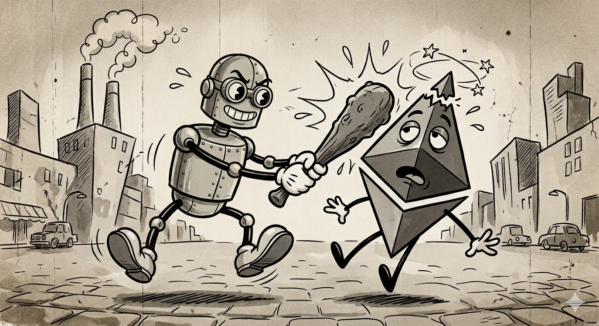

AI Agents Killed Crypto

The grand promise of cryptocurrency was never just about money. Smart contracts were supposed to eliminate the need for trusted intermediaries in all human interactions—not just financial ones. Buy a house, hire a freelancer, resolve a dispute, place a bet on an election—all mediated by immutable code on a blockchain, no humans required. This was the vision that launched a thousand whitepapers.
Smart contracts failed to deliver on this promise. They cannot enforce anything in the real world that is not purely financial. AI agents can. If this sounds like a strong claim, it is. But the evidence is overwhelming, and the crypto community has quietly known it for years.
I have been in the crypto space for a long time. I have written about privacy coins, I follow the markets, and I believe in the technology's financial applications. But the non-financial use cases—the ones that were supposed to revolutionize how people interact with each other—have hit a wall that no amount of Solidity code can overcome: the physical world does not run on a blockchain.
Code Is Not Law
The crypto mantra "code is law" holds for purely on-chain transactions. If a smart contract says send 5 ETH from address A to address B when condition X is met, and condition X is verified on-chain, it executes. No one can stop it. This is genuinely powerful for financial applications.
But the moment you try to mediate a real-world agreement with a smart contract, "code is law" collapses. Consider a peer-to-peer freelance contract. A client deposits funds into a smart contract. A freelancer agrees to deliver a website in two weeks. Two weeks pass, and the freelancer delivers something—but the client says it does not meet the requirements. Who decides? The smart contract cannot evaluate the quality of a website. It needs an oracle, an arbitrator, a human.
And if the freelancer simply never delivers? The smart contract can hold the funds indefinitely, but it cannot compel the freelancer to work. It cannot send a demand letter. It cannot file a complaint. It cannot show up at the freelancer's door. For that, you need law enforcement and courts—the exact institutions smart contracts were supposed to replace.
AI Agents Can Take Real Action
AI agents are fundamentally different from smart contracts because they operate bidirectionally with the real world. A smart contract can only execute on-chain logic and wait for external data to be fed in. An AI agent can go get that data, evaluate it, and take action based on it.
In my Reflections on AI, I discussed AI as "prediction machines," drawing from Agrawal, Gans, and Goldfarb's framework. This framing is correct but incomplete for the agentic era. AI agents are prediction machines that can also act on their predictions. They can send emails, make API calls, review documents, negotiate with counterparties, monitor physical systems through IoT integrations, coordinate logistics, and escalate to human authorities when necessary.
Consider the freelance dispute again. An AI agent mediating between a client and a freelancer can review the deliverables against the original requirements, assess whether the work meets the specified criteria, communicate with both parties to clarify disputes, propose resolutions, and release funds—all without a human intervening. If one party is unresponsive, the agent can send reminders, impose deadlines, and ultimately escalate to a human arbitrator or legal process. The agent does not replace the legal system, but it handles the vast majority of interactions that never needed a courtroom in the first place.
This is what smart contracts promised but could never deliver: an automated intermediary that understands context. A smart contract can check if block.timestamp > deadline. An AI agent can read a project brief, compare it to a delivered product, and make a judgment. The difference is not incremental. It is categorical.
The implications extend beyond individual disputes. AI agents can manage supply chains by monitoring shipments in real-time and autonomously rerouting when problems arise. They can mediate rental agreements by inspecting photos of property conditions. They can coordinate multi-party business deals by reviewing contracts, flagging risks, and ensuring each party meets their obligations. In every case, the agent does what a smart contract structurally cannot: interact with the messy, unstructured, physical world.
What Crypto Still Does Well
I am not arguing that cryptocurrency is useless. Purely financial functions remain crypto's genuine strength. Permissionless value transfer across borders, censorship-resistant payments, and DeFi protocols that swap tokens without intermediaries—these work because the entire interaction is on-chain. There is no oracle problem when both the input and the output are native to the blockchain.
Privacy coins serve a real purpose. As I wrote in Monero v. Zcash, there are legitimate reasons to want financial privacy, and the cryptographic techniques powering shielded transactions are genuinely impressive. Bitcoin continues to function as a store of value and a medium of exchange that no government can unilaterally freeze.
The argument is specific: crypto's non-financial use cases—the ones that were supposed to revolutionize governance, supply chains, identity, and contracts between people—have been superseded. Not by a better blockchain, but by a technology that can actually interact with the world outside the chain.
Smart contracts are powerful within their financial sandbox. But the dream of trustlessly mediating all human interactions through immutable code was always constrained by a simple fact: the physical world does not run on a blockchain. Every attempt to bridge that gap introduced the very thing smart contracts were designed to eliminate—a trusted intermediary. AI agents do not solve the trust problem through immutability. They solve it through capability. They can observe, evaluate, communicate, and act in the real world in ways that smart contracts structurally cannot. The future of automated mediation between people is not code on a chain waiting for an oracle to tell it what happened. It is an intelligent agent that can go find out for itself.